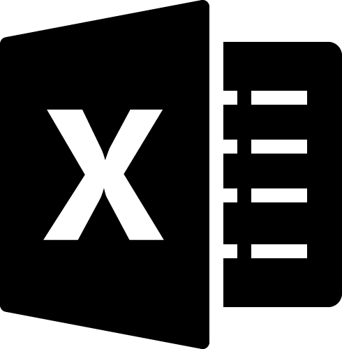
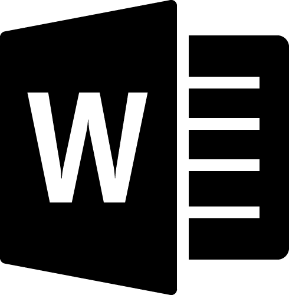
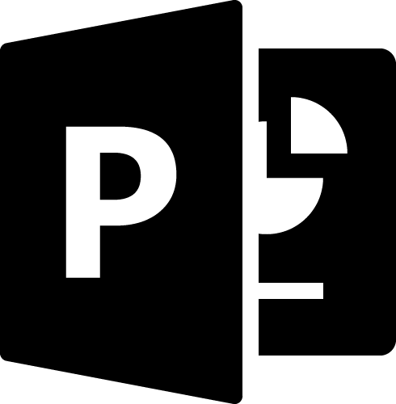

About
生花店や結婚式場でのフローリストを経験後、デザインやコーディングを学び、現在は企業内のイントラサイト更新業務をメインに新規作成なども行っております。
ヒアリングからお客様のニーズを汲み取って形にするところはフローリストにも通じるものを感じながら、季節や仕入れに左右されずにデザインを追及できるところにWebの可能性を感じています。
丁寧なコミュニケーションで安心してお仕事をお任せいただけるよう心がけております。
Skills
| Adobe Illustrator 操作可能。バナーやチラシ、ロゴの作成などが出来ます。 |
|
| Adobe Photoshop 操作可能。写真加工やバナー、デザインカンプの作成が出来ます。 |
|
| Adobe Premiere Pro 基本操作可能。動画の編集が出来ます。 |
|
| Adobe Dreamweaver 基本操作可能。フォーマットを用いてサイトやメルマガの作成が出来ます。 |
|
 |
Adobe XD 基本操作可能。デザインカンプの作成が出来ます。 |
| Visual Studio Cord HTML/CSSを使用したWebサイトのコーディングが出来ます。 |
|
|  | microsoft Excel 操作可能。グラフ、資料の作成が可能。関数も簡単なものは扱えます。 |
|  | microsoft Word 操作可能。文書の作成や差し込み印刷などが出来ます。 |
|  | microsoft Power point 操作可能。資料やスライドショーの作成が出来ます。 |
Works
バナー制作
架空の企画立案から手描きのラフを作成し、PhotoshopとIllustrator を用いて作成しました。
ロゴデザイン
職業訓練高での課題に合わせ、PhotoshopとIllustrator を用いて作成しました。
女性向けブランドロゴ
Webサイト模写
実在のWebサイトをCMSに合わせて模写しました。JavaScriptも使用し、動きのあるサイトを再現しています。
https://train-choka-20230201.296.works/kawasaki_world/